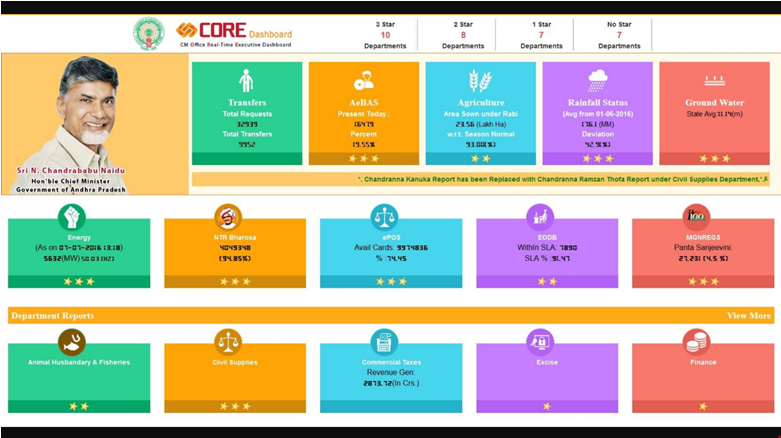

Get a dashboard like Andhra CM’s and get your industry up-to-date.
e-LMS will solve the issues relating to management of resources (i.e., machinery and materials) in an effective way by the use of IoT and latest software solutions. An e-LMS is an external observer that monitors a fully functioning application, and is generally intended to be permanent.
An e-LMS will answer these questions in the production line:
For example, what if you are a medium scale manufacturer and you find frequent missing of components and unable to find the right amount of planning to meet the actual customer demand. e-LMS will solve these problems by syncing the material data with the machine, employee and deadlines.